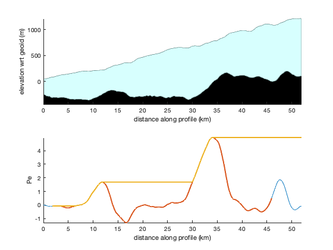

peclet documentation
peclet calculates the Peclet number along a glacier flowline using the formulation by Felikson et al., 2017.
Contents
Syntax
Pe = peclet(d,thck,sfz) Pe = peclet(...,'m',m) Pe = peclet(...,'CouplingLength',Nthck) Pe = peclet(...,'endpoints','fill')
Description
Pe = peclet(d,thck,sfz) returns the Peclet number along a glacier flowline where d is distance along the flowline in meters, and thck and sfz are the corresponding thickness and surface elevation in meters. The dimensions of d, thck, and sfz must all match. Tip: You can use pathdistps or pathdistpsn to get the distance along the flowline d in meters.
Pe = peclet(...,'m',m) specifies a positive exponent m that relates to basal sliding (see Supp. Eq. 4 of Felikson et al., 2017.). By default, m = 1.
Pe = peclet(...,'CouplingLength',Nthck) specifies a longitudinal coupling length as a multiple of ice thickesses. This is equivalent to l/H in Kamb & Echelmeyer's paper cited below. Important: Nthick is not the same thing as the total window width. The Kamb & Echelmeyer paper describes it in detail, but the "averaging length" is the full width of a boxcar window and is equal to 4*l. In this function, the default value of Nthck is 2.5, which is equivalent to a moving average window width of 10 ice thicknesses.
- For guidance on choosing a value of Nthck, Kamb & Echelmeyer state that "l/H ranges from about 1.5 to 10...for temperate valley glaciers, with f near 0.5 and with longitudinal strain-rates typically of order 0.01-0.05 /yr, l/H should be in the range from about 1 to 3, whereas for ice sheets ... the expected l/H is in the range from about 4 to 10, distinctly higher than for valley glaciers."
Pe = peclet(...,'endpoints','fill') sets endpoints to NaN when performing the moving window average on the thickness and surface profiles, in a manner equivalent to the 'fill' option in the movmean function. By default, the moving window shrinks at each end, to provide continuous measurements at the edges. This option will result in missing data at each end of the profile, as well as near each NaN datapoint.
Example 1
For this example, load Kangilerngata_Sermia_flowline.mat, which contains north polar stereographic coordinates xfl,yfl. If you have my MODIS Mosaic of Greenland function installed, you can take a look that the profile in map view like this, but don't worry about it if you don't have modismog.
load Kangilerngata_Sermia_flowline figure plot(xfl,yfl) modismog('contrast','white') xlabel 'easting (m)' ylabel 'northing (m)'
You'll need my functions for Mathieu Morlighem's BedMachine data to get the thickness and surface slope, so we might as well take a look at the profile down this glacier too. Use the pathdistpsn function to get an array of distance in meters along the flowline. That will be our common horizontal axis reference:
dfl = pathdistpsn(xfl,yfl); figure subplot(2,1,1) bedmachine_profile(xfl,yfl,'horiz',dfl/1000,'greenland') xlabel 'distance along profile (km)' ylabel 'elevation wrt geoid (m)'
Now use bedmachine_interp to get thickness and surface elevation along the flowline, and calculate the Peclet number:
H = bedmachine_interp('thickness',xfl,yfl,'greenland'); sfz = bedmachine_interp('surface',xfl,yfl,'greenland'); Pe = peclet(dfl,H,sfz); subplot(2,1,2) plot(dfl/1000,Pe) axis tight box off xlabel 'distance along profile (km)' ylabel 'Pe'
In the profile above, we took the calculation all the way to the edges of the profile, even though we're smoothing using a window spanning several ice thicknesses. This means that we might not actually want to trust the data within a couple of ice thicknesses of either edge of the profile.
To eliminate any potential contamination from the edge effects of the filter, use the 'endpoints','fill' option:
Pe = peclet(dfl,H,sfz,'Endpoints','fill'); hold on plot(dfl/1000,Pe,'linewidth',2)
Felikson et al found that the inland extent of thinning relates to the cumulative maximum of the Peclet number. Signals don't tend to travel upstream further than where the running maximum Peclet number exceeds about 3. So for the Pe we calculated above, let's plot the running maximum:
plot(dfl/1000,cummax(Pe),'linewidth',2)
 Sure enough, according to the Felikson paper, the thinning signal dies out around the location where the bed slope rises and the running maximum of the Peclet number exceeds 3.
Example 2: Exploring m
What is the meaning of the exponent m? It's related to basal sliding, and nobody's really sure what value to use, so we tend to play around with values between 1 and 3. Here's how a Peclet profile varies as a function of m.
Start by defining an array of values of m between 1 and 3. Define a corresponding colormap and loop through each value of m, calculating and plotting the Peclet number for each value of m:
m = 1:0.1:3; cm = parula(length(m)); figure hold on for k = 1:length(m) Pe = peclet(dfl,H,sfz,'m',m(k),'endpoints','fill'); plot(dfl/1000,Pe,'color',cm(k,:)) end box off xlabel 'distance along profile (km)' ylabel 'Pe' axis tight % Manually set a colormap even though it's not actually linked to values m: cb = colorbar('location','north'); cb.Position = [cb.Position(1:2) cb.Position(3:4)/3]; cb.XAxisLocation = 'top'; colormap(cm) xlabel(cb,'exponent m') caxis([1 3])
Example 3: Effects of smoothing
As above, but
Nthick = 0:10; cm = parula(length(Nthick)); figure hold on for k = 1:length(Nthick) Pe = peclet(dfl,H,sfz,'CouplingLength',Nthick(k),'endpoints','fill'); plot(dfl/1000,Pe,'color',cm(k,:)) end box off xlabel 'distance along profile (km)' ylabel 'Pe' axis tight cb = colorbar('location','north'); cb.Position = [cb.Position(1:2) cb.Position(3:4)/3]; cb.XAxisLocation = 'top'; colormap(cm) xlabel(cb,'N thickness coupling length') caxis([0 10])
Citing this function
The formulas in this function are taken directly from Felikson et al., 2017, so if you use this function, please cite Denis' paper! And at least for accountability's sake, it's probably prudent to cite my Antarctic Mapping Tools paper too. Here are the citations:
Felikson, Denis, Timothy C. Bartholomaus, Ginny A. Catania, Niels J. Korsgaard, Kurt H. Kjær, Mathieu Morlighem, Brice Noël et al. "Inland thinning on the Greenland ice sheet controlled by outlet glacier geometry." Nature Geoscience 10, no. 5 (2017): 366-369. https://doi.org/10.1038/ngeo2934
Greene, C. A., Gwyther, D. E., & Blankenship, D. D. Antarctic Mapping Tools for Matlab. Computers & Geosciences. 104 (2017) pp.151-157. http://dx.doi.org/10.1016/j.cageo.2016.08.003
Author Info
This function and supporting documentation were written by Chad A. Greene of NASA Jet Propulsion Laboratory. December 2020.